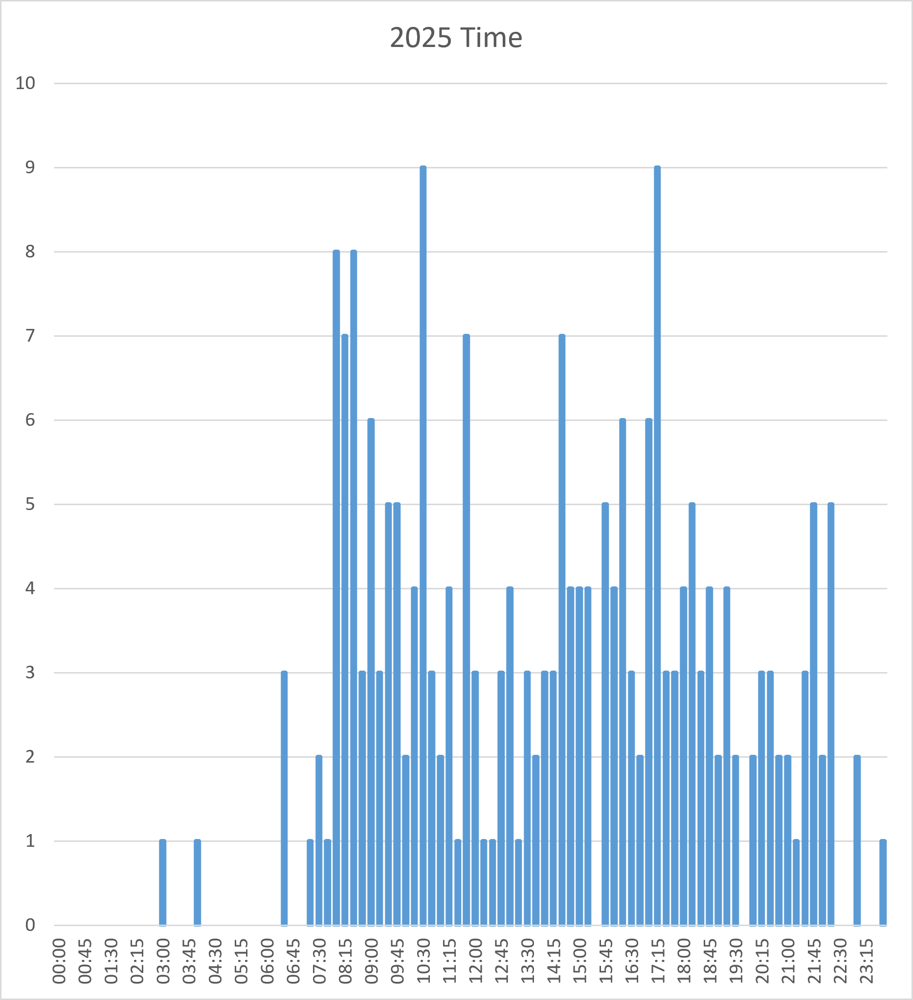
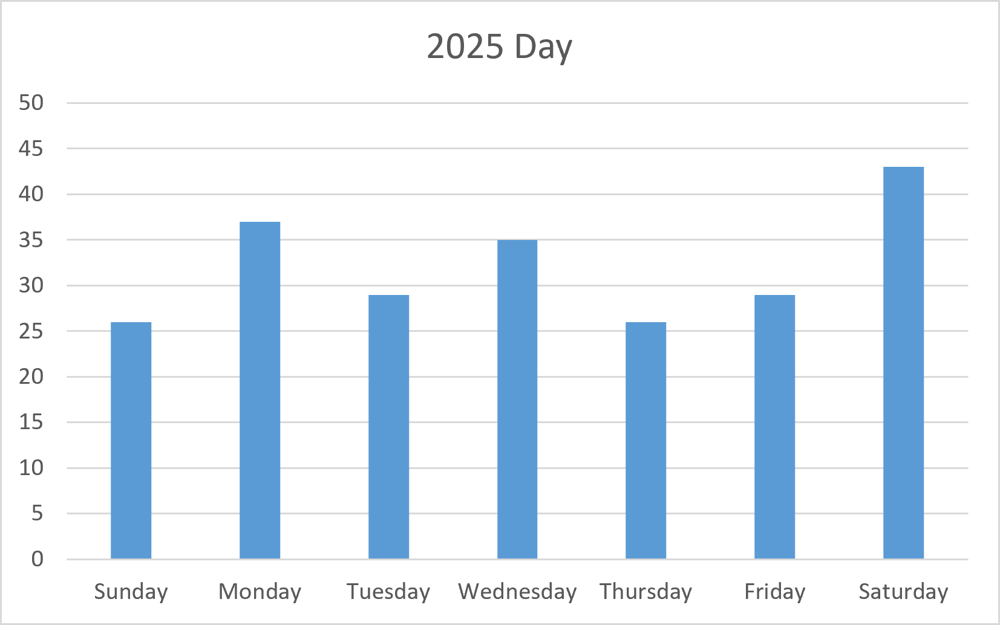
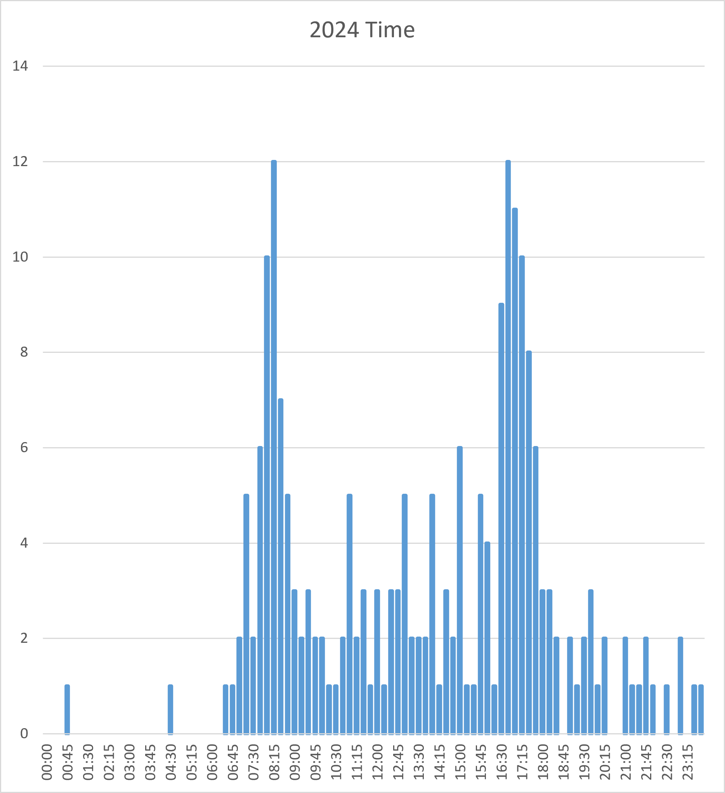
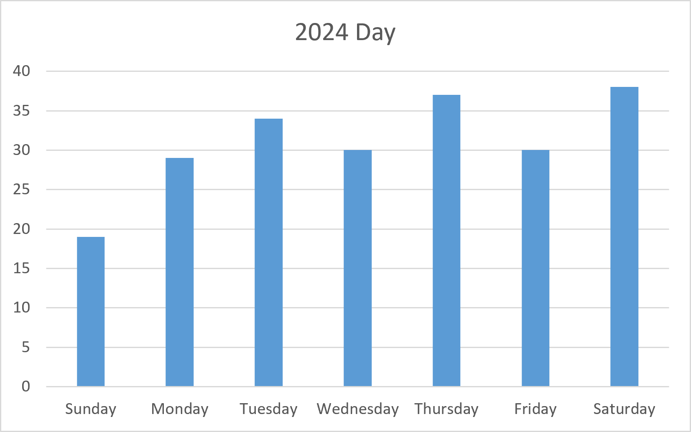
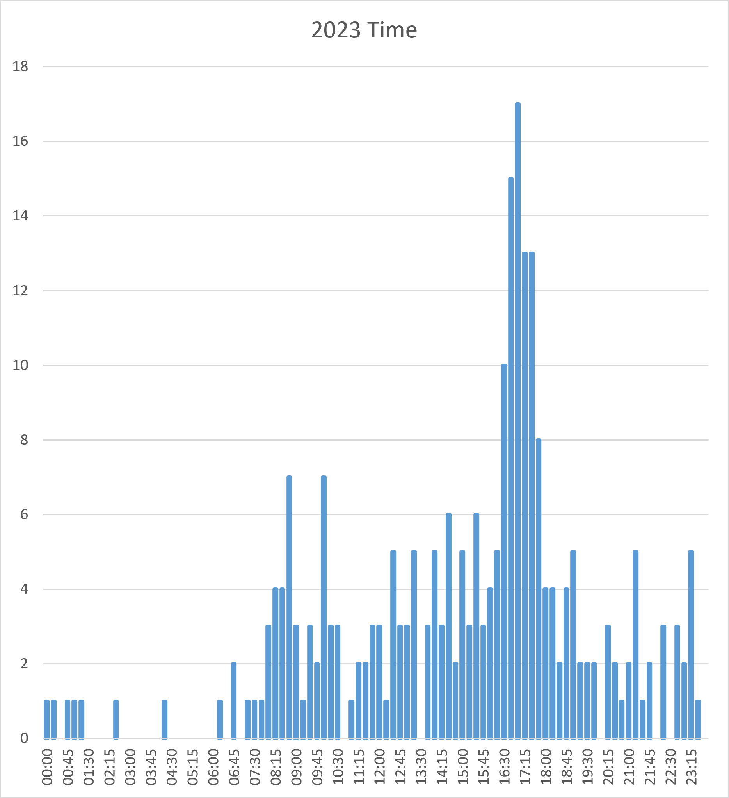
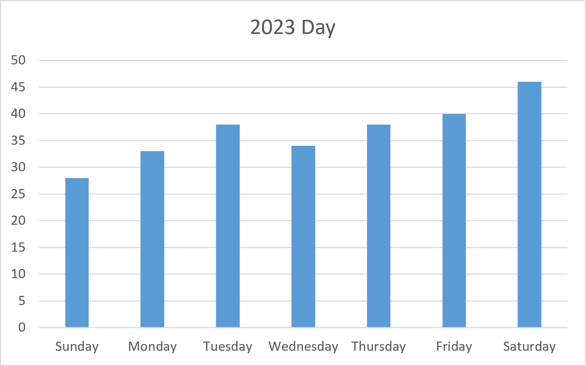

if you know you know
Some or all of the table code was generated by AI. No table entries were generated by AI.
Entries before 2025 are timezone corrected, entries from 2025 onwards are recorded in local time.


You can tell that I was unemployed for much of this time because there aren't major time peaks. This is when I quit my job and traveled for 4 months.


In 2024, I believe my sleep schedule got a little better and I began handling things in the morning too which can be see by the two peaks on the graph.


In 2023, I clearly took care of business only after work. I recall wanting to sleep in and just waiting until I got home.